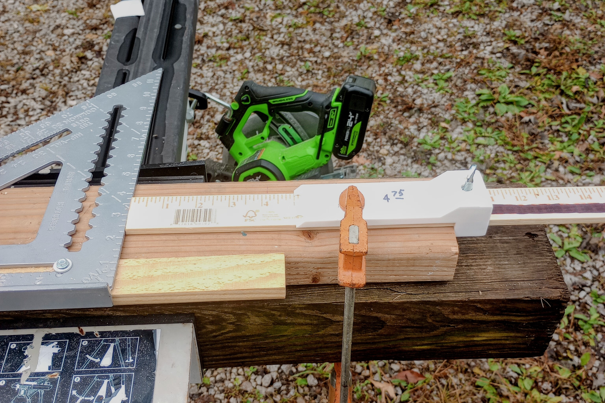
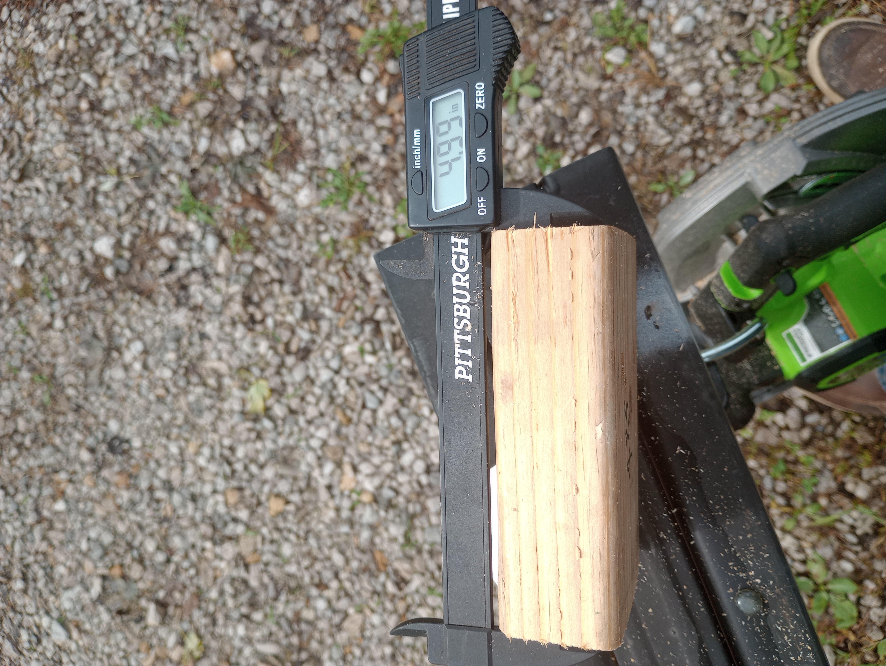

Parametric 3D-printable bracket for repeatable, dead-accurate straightedge cuts
⚠️ Sizing Notice: Measure your ruler with calipers and add at least 0.012" clearance to Ruler H and Ruler W.
Enter your custom dimensions in the viewer below, inspect the orientation, and export an STL or 3MF.
Offset parameter by that exact difference and reprint for lifetime accuracy on that circular saw.

Gauge locked to ruler using 1/4" thumbscrew, referenced against speed square clamp

Test cut verification with calipers measuring 4.99" on a 5.00" target block
You do not need to use GitHub Pages to customize this model. You can run the script entirely offline in your own browser:
gauge_standalone.js from your file explorer directly onto the JSCAD browser window.